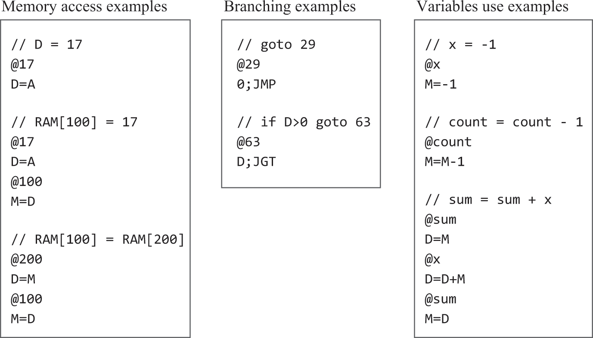
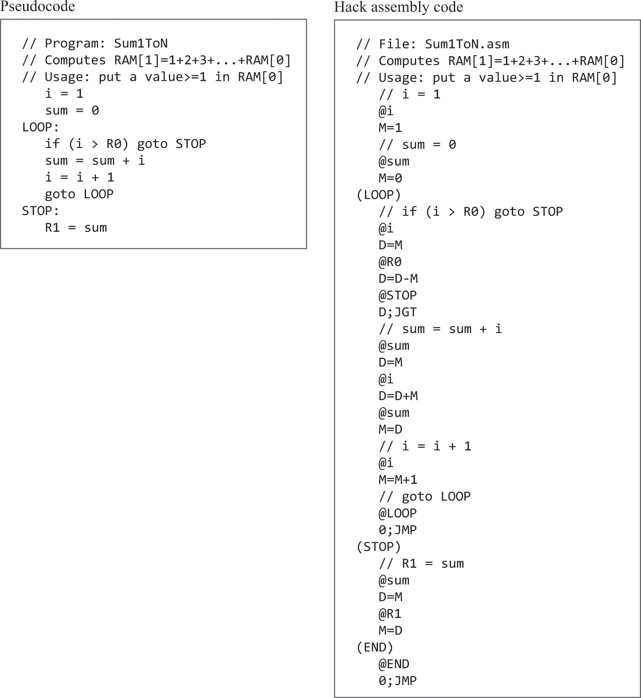
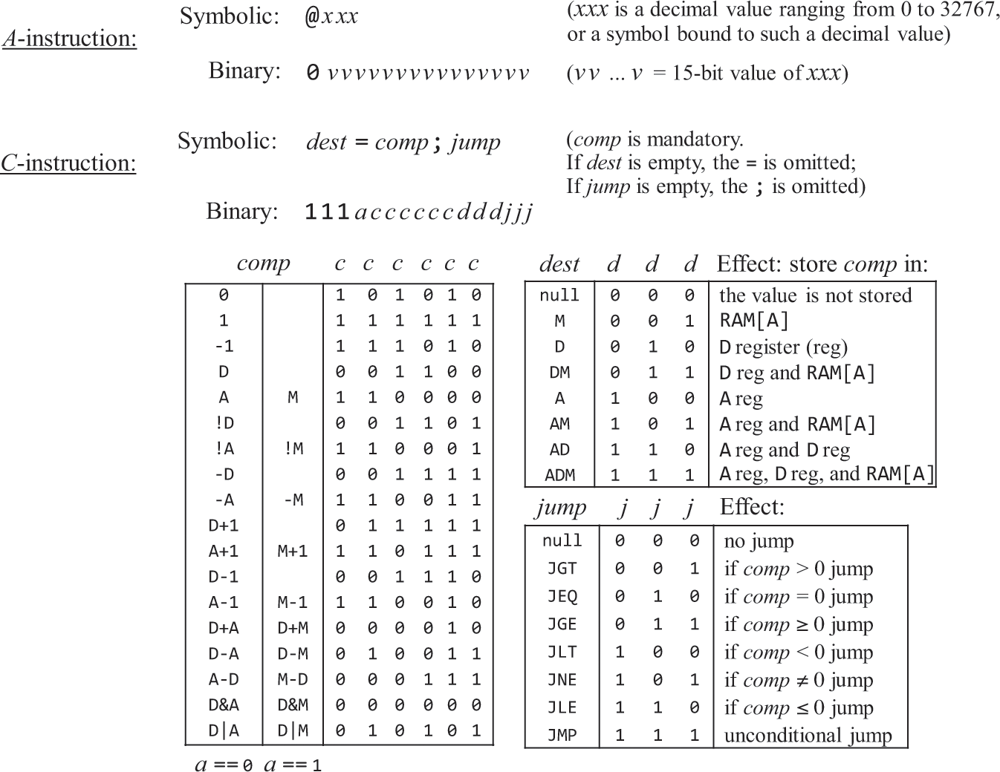
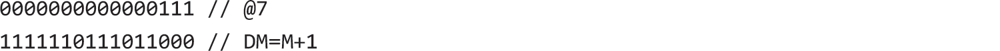
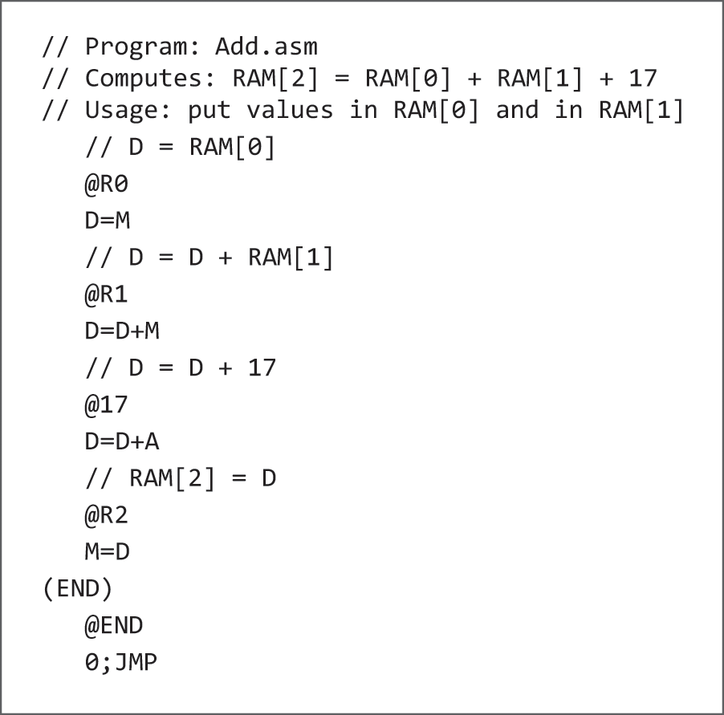

3.1 Machine Language
- Machine language is a designed such that it can store machine instructions (in the form of binary)
- Using those instructions, we can tell the CPU to perform arithmetic & logic operations, read / write values to and from memory, test Booleans and decide which instructions to fetch and execute
Overview
Hardware Elements
- Machine language manipulates memory using a processor and a set of registers
Memory
- A collection of hardware devices that store data and instructions
- Continuous sequence of memory registers, each having a unique address
Processor
- Performs a fixed set of operations
- Arithmetic
- Logic
- Memory access
- Control (branching) operations
- Draws inputs from selected registers and memory locations and writes it outputs to selected registers and memory locations
- Consists of ALU, set of registers, and gate logic that enables it to parse and execute instructions
Registers
- CPU and memory are implemented separately, moving data between them is slow
- For this reason, CPUs have their own memory registers for high speed local memory
- Include data registers and address registers (which can be interpreted as data OR addresses)
- When we place a bit in the address register, say n, causes the memory location whose address is n to be selected instantly
- For this reason, CPUs have their own memory registers for high speed local memory
Languages
- Can be written two ways:
- Binary
- Symbolic
- Consider the operation
set R1 to the value of R1 + R2- The addition operation can be represented by
101011 - Registers
R1andR2represented by:00001and00010respectively - From left to right, we can write a 16 bit instruction
1010110001000001to achieve this operation
- The addition operation can be represented by
- As you can imagine, programming like this is a nightmare. This is why we have high level languages and compilers to translate them into machine code!
Instructions
- Registers are denoted as
R0, R1, etc
Arithmetic and Logical Operations
Memory Access
- We use address registers to access and manipulate memory locations
- If we want to set a memory location 17 to value 1, we say load A,17 followed by load M,1
- M in this scenario stands for memory register selected by A
Flow Control
- Machine languages have the ability to jump to certain lines of code, similar to how conditional programming works in a high level language
- Use
goto
- Use

Symbols
- Symbolic assembly code is much easier to write, debug and maintain
Hack machine Language
- Processes, moves and stores chunks of 16 bit values
Memory
- Uses two memory units, data and instructions
- Data memory stores binary values that programs manipulate
- Instruction memory stores the program's instructions in binary
- Both are 16 bit wide and each has a 15 bit address space

- Data memory (RAM) is read / write
- Supply an address to select an individual register and use
M=0to update the selected RAM register to 0
- Supply an address to select an individual register and use
- Instruction memory (ROM) is read only
- Supplies an address to a register which contains the current instruction
Registers
- Instructions manipulate data, address and data memory registers (
D, A and M) - Manipulate using traditional arithmetic:
Addressing
- Can set the value of the A register using:
@number - Can set the value of the D register using:
@number D=A - Suppose we want to set the value of RAM(100) to 17, that is we want to set the value of the RAM register with address 100 to the value of 17
@17 // store 17 in A
D=A // set data = A
@100 // store 100 in A for addressing
M=D // set the memory register with address associated with A (100) to the data value (17)
- Set RAM(100) to the value of RAM(200)
Set of D values
This code sets the value of "M" to a variable D and assigns it to an object.
Branching
- What if we don't want to execute code sequentially but jump to certain parts of the code?
- Can be done using:
if D==0 goto 52, can be implemented as:
- Which just means, evaluate D, if the value equals 0, jump to execute the instruction stored in ROM(@)
Variables
-
The value we put after
@can either be a constant or a symbol -
We also have 16 dedicated Registers R0 - R15 that are always bound to their number
Examples

- Hack assembly code to sum numbers from 1 to n

- Ignoring the details, we can see an emerging pattern
- An instruction @value is used to select a target memory address, the subsequent instructio specifies what to do at this address
- Essentially, in 2 lines, were specifying a variable and then manipulating that variable
- An instruction @value is used to select a target memory address, the subsequent instructio specifies what to do at this address
- Two generic instructions A instructions (@) and C instructions - which compute
Hack Language Specification

A Instructions
- Sets the A register to some 15 bit value
- Used for three different purposes
- Provides the only way to enter a constant value into the computer under program control
- Sets the stage for a following C instruction that manipulates the selected RAM register referred to as M, by first setting A to the address of that register
- Sets the stage for a following C instruction that specifies a jump by first setting A to the address of the jump destination
C Instructions
- Answers 3 questions:
- What to compute (comp)
- Designed to compute one function on two 16 bit inputs
- First input comes from D, second comes from either A (when the a-bit is 0) or from M (when the a-bit is 1)
- The a-bit and six c-bits comprising the comp field are used assign which function to perform on the inputs
- Where to store the computed value (dest)
- Can be stored in 0, 1, 2, or 3 possible destinations simultaneously
- The first and second d-bits code whether to store the computed value in A and in D, respectively
- The third d-bit codes whether to store the computed value in M
- 
- Can be stored in 0, 1, 2, or 3 possible destinations simultaneously
- What to do next (jump)
- Two possibilities:
- Fetch and execute the next instruction in the program, which is default
- Fetch and execute some other designated instruction (jumping)
- Whether or not to jump us determined jointly by the three j bits of the instruction's jump field and by the ALU output
- Two possibilities:
- What to compute (comp)
Symbols
- Assembly instructions can specify locations via constants OR symbols
- Any sequence of letters, digits, underscores, dots, dollar signs and colons that doesn't begin with a digit
- Symbols fall into 3 categories:
- Predefined Symbols:
- Representing special memory addresses
R0, R1, R2, etc- Really useful to perform operations with values from 0 -15
SP, LCL, ARG, THIS, THAT- Bound to 0-4 each respectively
SCREEN, KBD- Base addresses of the screen and keyboard memory maps (designated memory blocks)
- Label Symbols
- Representing destinations of go to instructions
- Declared using
xxxsyntax - Written using uppercase letters
LOOP, STOP, END, etc
- Variable Symbols
- Representing variables
- Any symbol
xxxin a program that is not predefined and is not declared elsewhere is treated as a variable - Bound to a unique number starting from 16
- Written using lower case letters
- Predefined Symbols:
Input / Output Handling
- Hack hardware can be connected to to screen / keyboard (IO devices)
- Interact with he computer platform via memory maps
- Drawing pixels on the screen is done by writing binary values into a designated memory segment associated with the screen
- Listening to the keyboard is done by reading a designated memory location associated with the keyboard
Screen
- Organised as 256 rows of 512 pixels per row
- The contents of the screen are represented by a memory map, stored in an 8k memory block of 16 bit words, known as
SCREENpredefined symbol
Keyboard
- Single word memory map, known as
KBDpredefined symbol - When a key is pressed on the physical keyboard, its 16 bit character code appears at RAM(KBD), defaulting to 0
Syntax Conversions and File Formats
Binary Code Files:
- Programs written in binary hack language have
.hackextension - Each line in the file codes a single binary execution, using a sequence of sixteen 0 and 1 characters
- Taken together, all the lines in the file represent a machine language program
- When a program is loaded into the ROM, the binary code appearing in the file’s nth line is stored at address n of the ROM, starting from 0
Assembly Language Files
- Programs written in assembly hack language have
.asmextension - Composed of text lines, each being an A or C instruction or a label declaration
LOOP, END, etcor comment- A label declaration is a text line of the form (symbol)
Constants and Symbols
- The
xxx’s in the instructions of the form@xxx- Are unsigned values from 0 to 2^15 -1 and are written in decimal notation (thank the lord)
- A symbol is a sequence of letters, digits, underscores, dots, dollar signs and coils that does not begin with a digit
Comments
- A text line beginning with two slashes that is ignored when executed
Whitespace
- Leading space characters and empty lines are ignored
Case Conventions
- All assembly conventions must be written in uppercase
- Labels are uppercase, variables are lowercase
Hack Programming
Examples

- We can see that predefined symbols can be used as working variables too
-
We can also see how to end these programs using
END -
arr[3] = -1
@arr // Load the base address of the array 'arr' into the A register
D=M // Load the contents of the memory location (base address of 'arr') into the D register
@3 // Load the constant 3 into the A register
A=D+A // Calculate the address of arr[3] by adding 3 to the current value in D, and store it in A
M=-1 // Set the contents of the memory location whose address is currently in the A register to -1